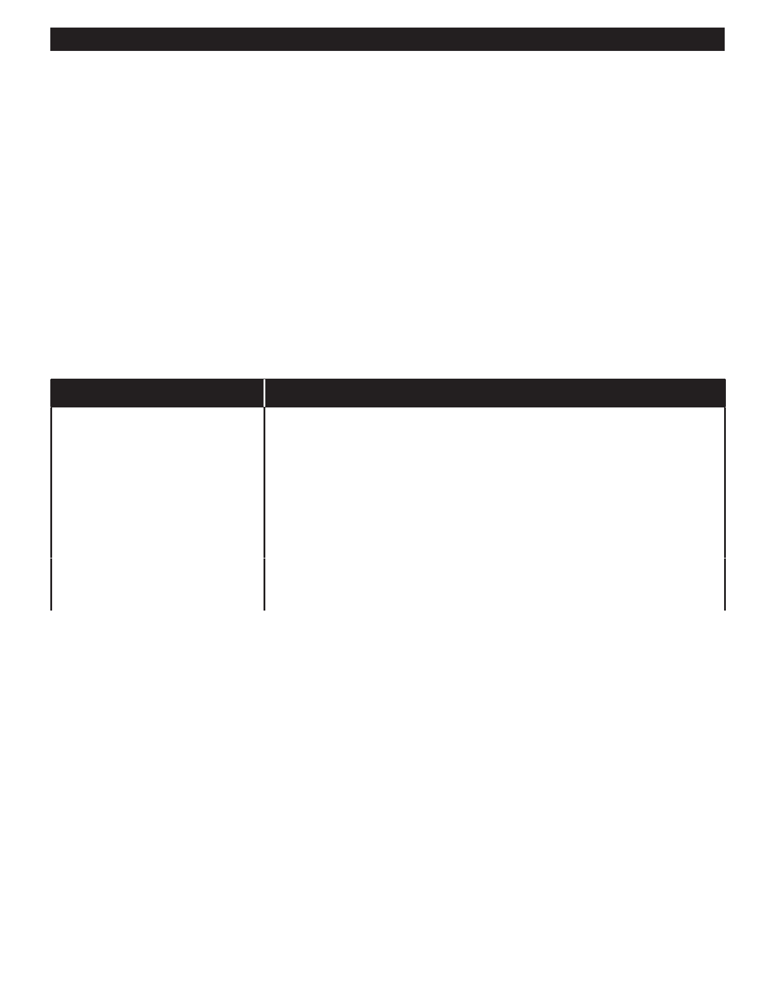

PA RT I C I PA N T R E S O U R C E G U I D E
Calculate the Subcooling Temperature (continued)
How-to Steps
1. Set up your equipment.
a. Attach the manifold gauge set to the service port. The high-side gauge goes to the high-pressure side; the low-side
gauge goes to the low-pressure side. Be sure the gauge valves are closed.
b. Install a digital thermometer probe on the liquid line, at the outlet of the condensing unit under the insulation.
2. Run the system for a full 15 minutes to let it stabilize.
3. Measure the condenser saturation temperature. To do this, read the liquid line pressure on the manifold gauge, and then
line it up with the temperature scale on the inside of the gauge. Record this number.
4. Read and record the temperature on the digital thermometer attached to the liquid line. Record this number
5. Subtract the liquid line temperature from the condenser saturation temperature to determine the amount of sub-cooling.
Generally, this number should be between 15 and 30. Ideally, this number will follow the equipment manufacturer’s
specifications.
If
Then
The number is lower than 15
Charge the system with refrigerant.
Open the suction line service port, the low-side valve on the manifold gauge set,
and the valve on the refrigerant cylinder. Add refrigerant vapor until the suction
line temperature is lowered to the correct level, and the system is generating the
correct amount of superheat.
Remember: Always wear personal protective gear, including eye and hand
protection, when working with refrigerant.
The number is higher than 30
The system is overcharged, meaning there is too much refrigerant.
Remove the excess refrigerant, following the steps on page 41.
For More Information
If you’d like to explore the topic of subcooling in more depth outside of class, refer to Section 4 of your HVAC Servicing
Procedures manual.
36